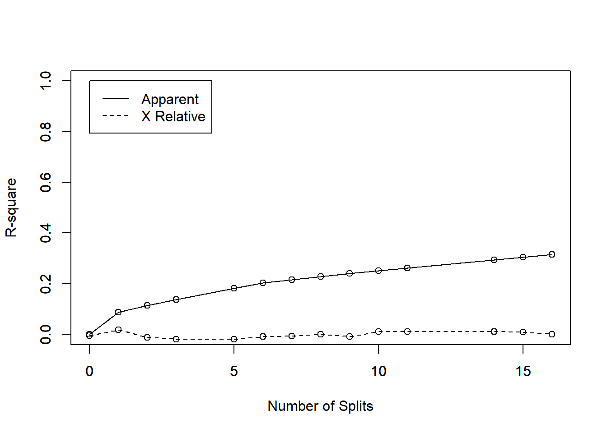

Regression tree
2020-10-17
Tree for monthly consumption
Error
##
## Regression tree:
## rpart(formula = CONSUMO_BRUTO ~ ., data = dados, method = "anova")
##
## Variables actually used in tree construction:
## [1] AreaTotImovel Banheira Escolaridade IdadeImov Moradores
## [6] Piscina
##
## Root node error: 17740/394 = 45
##
## n= 394
##
## CP nsplit rel error xerror xstd
## 1 0.1848 0 1.000 1.006 0.1080
## 2 0.0599 1 0.815 0.821 0.0927
## 3 0.0423 2 0.755 0.836 0.0887
## 4 0.0312 3 0.713 0.807 0.0868
## 5 0.0309 4 0.682 0.817 0.0878
## 6 0.0243 5 0.651 0.802 0.0880
## 7 0.0196 6 0.627 0.773 0.0828
## 8 0.0140 7 0.607 0.767 0.0803
## 9 0.0106 8 0.593 0.753 0.0792
## 10 0.0100 10 0.572 0.760 0.0760

Prunned tree

Three for per capita consumption

Error
##
## Regression tree:
## rpart(formula = dados$INDICADOR_CONSUMO ~ ., data = dados, method = "anova")
##
## Variables actually used in tree construction:
## [1] AreaPerCapita AreaTotImovel Crianca RendaFamil RendaPerCapita
## [6] Tipologia
##
## Root node error: 1354340/394 = 3437
##
## n= 394
##
## CP nsplit rel error xerror xstd
## 1 0.0883 0 1.000 1.004 0.116
## 2 0.0263 1 0.912 0.976 0.106
## 3 0.0234 2 0.885 1.014 0.108
## 4 0.0219 3 0.862 0.995 0.105
## 5 0.0210 5 0.818 0.979 0.105
## 6 0.0137 6 0.797 0.983 0.106
## 7 0.0121 7 0.784 1.003 0.112
## 8 0.0117 8 0.772 1.011 0.113
## 9 0.0112 9 0.760 1.021 0.114
## 10 0.0111 10 0.749 1.023 0.114
## 11 0.0106 11 0.738 1.025 0.115
## 12 0.0104 14 0.706 1.028 0.115
## 13 0.0104 15 0.695 1.028 0.115
## 14 0.0100 16 0.685 1.028 0.115